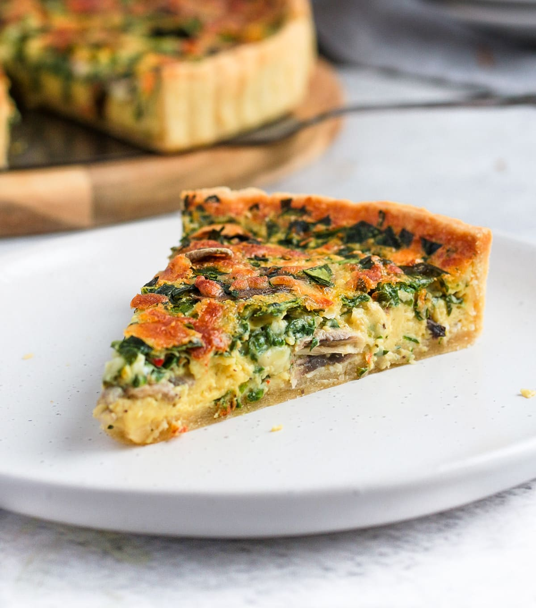

Vegetarian Quiche

Description
This vegetarian quiche is nutritious and perfect for breakfast, lunch and dinner. It can be served with salads to make a light and healthy meal.
I got this recipe from here. Big thanks to Rebekah Richards.
Ingredients
- 1 teaspoon salt
- 2 tablespoons butter
- 1 green bell pepper, diced
- 1 cup chopped tomatoes
- 1 clove garlic, roughly minced
- 1 pinch ground cinnamon
- 5 eggs
- ½ cup chopped zucchini
- 1 (9 inch/23 cm) unbaked pastry shell
- 1 and ½ cups chopped onion
- ½ cup sliced fresh mushrooms
- ¼ teaspoon curry powder
- Freshly ground black pepper
- ¼ cup milk
- ¼ cup freshly grated Parmesan cheese
- ¼ cup freshly shredded Cheddar cheese
Steps
- Sprinkle 1 teaspoon of salt over the chopped zucchini and mix well. Let it sit for 10 minutes to drain water.
- Preheat oven to 235°C (450°F). Line pastry shell with a double layer thickness of heavy-duty aluminium foil.
- Bake pastry shell in preheated oven for 5 minutes. Remove foil and bake for about another 5 minutes longer, until shell is lightly browned.
- Reduce oven heat to 175°C (350°F)
- Melt butter in a large skillet over medium heat. Cook and stir onions, green peppers, tomatoes, nushrooms, garlic and zucchini until just tender. Stir in curry powder, ½ teaspoon salt, pepper and cinnamon.
- Spoon vegetable mixture into crust.
- Beat eggs in a bowl; stir in milk, Parmesan cheese, and Cheddar cheese. Carefully pour egg mixture over vegetables.
- Bake in preheated oven until a knife inserted near the center comes out clean with no uncooked egg on it, this should take roughly 40 to 45 minutes. Let it rest for 5 minutes before cutting and serving.